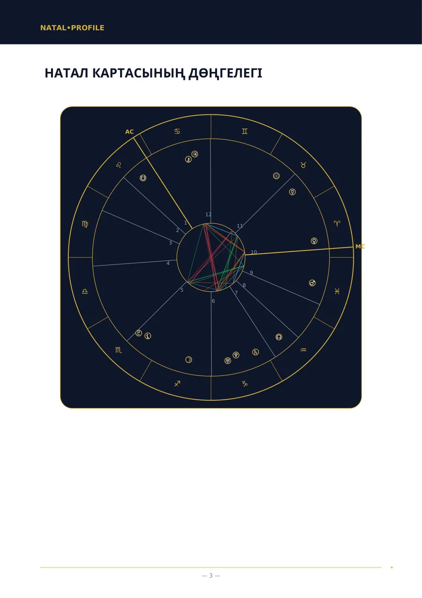
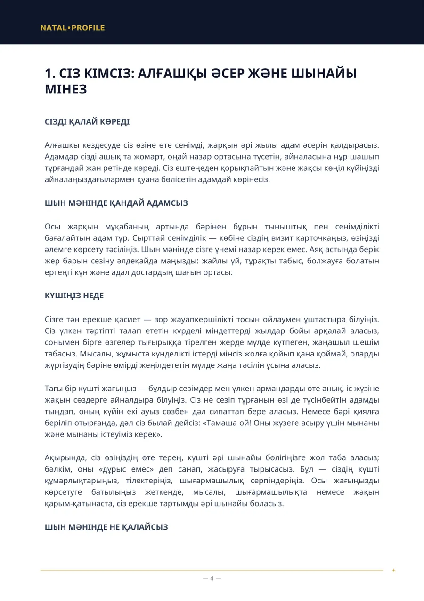
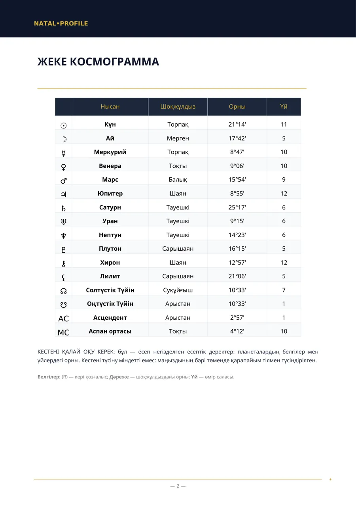
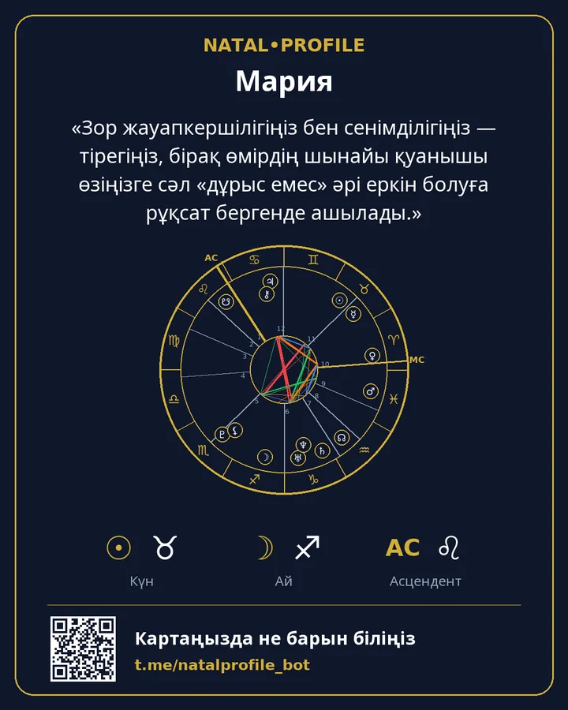

🌙 Натал Картасы (Негізгі Талдау)
Туған уақыт белгісіз болғанда мінез талдауы.
- 150 ⭐ Telegram Stars
- 6 тарау
Ішінде не бар
- Сезімдер: сізге не қуаныш әкеледі және не мазаңызды алады
- Сана: сіз қалай ойланып, шешім қабылдайсыз
- Іс-әрекет: істі қалай тындырасыз
- Махаббат: сіз қалай сүйесіз және нені бағалайсыз
- Сіздің күшіңіз және оны пайдалануға не кедергі келтіреді
- Дене мен энергия
Кімге лайық
- Туған уақытыңызды білмейсіз және анықтай алмайсыз.
- Сезімдеріңізді, ойлау және әрекет ету тәсіліңізді түсінгіңіз келеді.
- Өмір салалары (үйлер) бұл талдауға кірмейтініне келісесіз.
Нені енгізесіз
Есім, жыныс, туған күн және қала.
Үлгі беттер
«Натал карта» есебінің нақты беттері. Бұл үлгі: туған деректер ойдан алынған.




Басқа есептер
Натал Картасы (Толық Талдау)
Туған күн, уақыт және орын бойынша мінезіңіздің толық талдауы.
250 ⭐9 тарау · Толығырақ →
Үйлесімділік Талдауы (Толық)
Екі адам: сіздерді не жақындатты, қай жерде келіспейсіздер және бір-біріңізге не бересіздер.
250 ⭐6 тарау · Толығырақ →
Үйлесімділік Талдауы (Негізгі)
Туған уақыт белгісіз болғанда мінездердің үйлесімділігі.
150 ⭐5 тарау · Толығырақ →
Мансап пен Қаржы Талдауы
Жұмыста неде күштісіз, қандай кәсіптер лайық және ақшамен қарым-қатынасыңыз қандай.
200 ⭐7 тарау · Толығырақ →